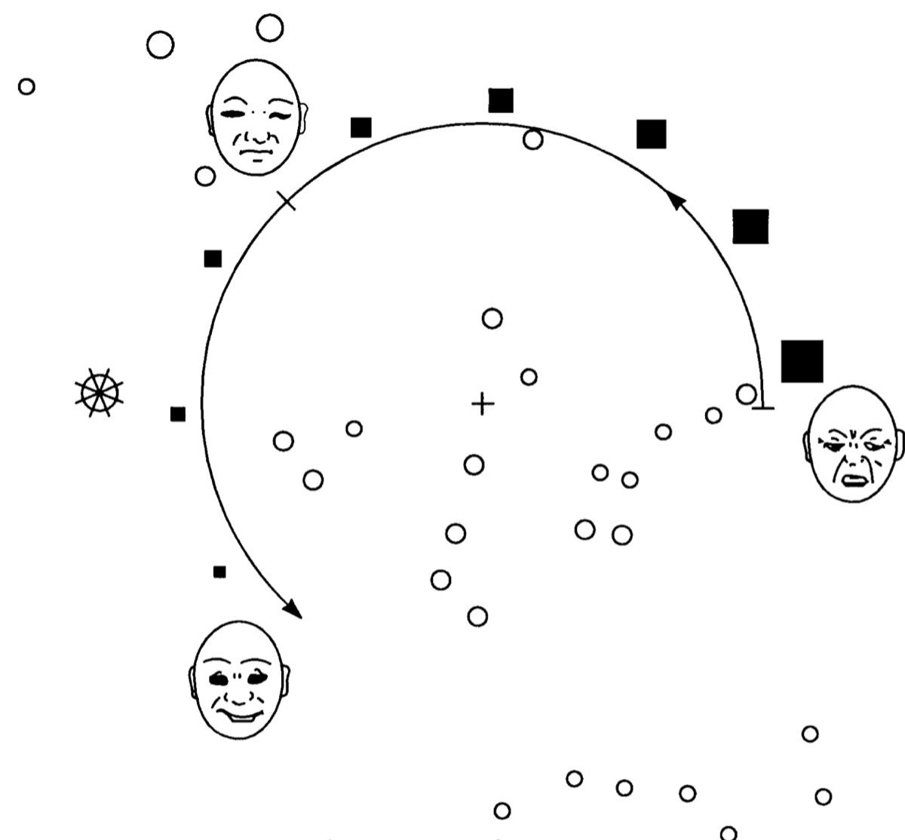

Raisin Dettre
This place is not a place of honor... no highly esteemed deed is commemorated here... nothing valued is here.
What is here is dangerous and repulsive to us. This message is a warning about danger.
Pictagram suggested as an alternative to the trefoil to represent radioactivity, from Trauth, Hora and Guzowski (Sandia Report SANDIA92-1382, 1993).
The web died several years ago, but like any giant dinosaur it takes time for the signal to travel from the brain to the rest of the body. I wrote my first web page back in 1995 or so, and I’ve treated it as a public place to occasionally put my thoughts: mostly lots of photos and essays for when I lived in America and I wanted to share my stories with relatives and friends back home, before Facebook or Instagram existed. So far, so 1990’s.
Nowadays, it is where I present all my research to the rest of the world, put digital copies of all my publications that are otherwise stuck behind paywalls, where I host my teaching materials for courses at Leiden Observatory, and is the public face for workshops and meetings that I've organised.
Starting with writing HTML from scratch, I’ve gone through my own custom scripts in Perl, a blog system based on the bash shell, then settled on dokuwiki to serve Markdown pages in a pleasing format for almost a decade. I have been using org mode in Emacs for all my calendar appointments and scheduling, and since Emacs has a large hacker community supporting its development, there is inevitably an option to write org pages and have them be exported to HTML. I’ve been a long time enthusiast of Edward Tufte’s books on style and graphics, liking the relative simplicity and clean style, so when I discovered Tufte CSSPretentious, moi?, I then set about getting emacs, org-mode, ox-tufte and tufte-css to play nicely together. It all appealed to the geek in me, but strangely enough I never seemed to get around to putting the results on the web.
Me writing web pages using Markdown, emacs, org-mode and several other esoteric scripting languages. (Wile E. Coyote from "There They Go-Go-Go!" Warner Bros. Looney Tunes (1956).
Then, late one evening, I had a revelation: Why the hell was I faffing around with a pile of not-quite-stable tools when I can write HTML by hand instead? Life’s simply too short to waste on tweaking computer scripts to make a web page. Write stuff, put it on the web. Job done.
So that's what I’m going back to. This is all written in HTMLWell, I’m using the Atom editor which makes closing the tags and checking this into my GitHub account very easy. with Tufte CSS by Dave Liepmann for styling, and synced up to the web server space at work. I’ll get back to coding for astronomy projects and papers, and more time for making bread.
All mistakes on these pages are my own. If you do decide to use any part of these web pages in presentations, please include a link to this page or at the very minimum, add “M. Kenworthy” somewhere visible.
Last updated about April 2022.